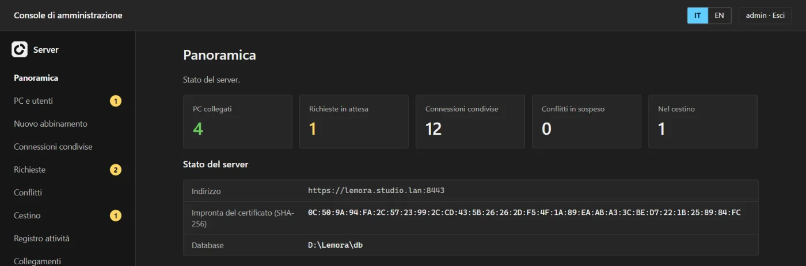

- Lemora
- Security
What is encrypted, with which key, where
One section per part: the program, the server, the extension, Claude, updates.
- Encryption
- AES-256-GCM
- Key
- PBKDF2-SHA256 · 600,000 iterations
- Unlock
- master password · Windows Hello
- Signature
- ECDSA P-256
Where the data is stored
A single encrypted database, on the PC. Settings, window positions and pairings are in the same vault: no scattered files.
| Mode | What leaves the PC |
|---|---|
| Portable | Only the check for new versions |
| Local | Only the check for new versions |
| Teams | Sync with the company server, over HTTPS, and the check for new versions |
Encrypted vault
- Algorithm
- AES-256-GCM on whole rows of connections and credentials: names, addresses, users and passwords.
- Key
- A random data key, wrapped with a key derived from the master password (PBKDF2-SHA256, 600,000 iterations).
- No DPAPI
- The Windows protection tied to the account is not used: an administrator of the PC or of the domain cannot open the vault without the master password.
- No back door
- Without the master password or Windows Hello nobody opens the vault, not even the people who wrote the program.

Unlock, verification, clipboard
- Windows Hello
- Fingerprint, face or PIN instead of the master password. The key is in the PC's TPM, one for each pair of PC and user.
- Verification before showing
- Viewing or copying a connection password requires Hello or the Windows password. On by default, turned off in the settings.
- Passwords tab
- During a session device passwords are copied at once: the vault is already open and the clipboard clears itself.
- Timed clipboard
- A copied password is removed from the clipboard after 30 seconds and excluded from the Win+V history and from the cloud clipboard.
- Keep unlocked
- After the fingerprint or the password, for the chosen time Lemora reopens without asking again, even after closing. It applies only to that PC and ends on signing out of Windows. "Lock and close" locks it again at once.

Connections
- Certificates and fingerprints
- Lemora remembers the RDP certificate and the SSH and SFTP server fingerprint for each connection. If they change, it warns before sending the credentials.
- Outdated RDP servers
- With an old TLS version it asks before lowering security; the "always" choice stays tied to that certificate.
- FreeRDP
- Parameters come from an environment variable of the process: the password never appears on the command line. The process ends together with Lemora.
- Import
- Local programs, gateways and session files referenced by an imported file are shown and approved before use.
- Additional databases
- For MySQL and PostgreSQL the server certificate fingerprint is remembered.
Teams server
Passwords on the server are encrypted with a key kept outside the database.
| Data | Protection |
|---|---|
| Entry passwords | AES-256-GCM, bound to the entry identifier. Random key in server.key, outside the database file. |
| Names, addresses, users, folders, log | SQLite database in a folder accessible only to SYSTEM, administrators and the service on Windows; permissions 700 on Linux. |
| Traffic | HTTPS with a self-signed certificate; the client requires the fingerprint seen on the first connection. |
| On the team PCs | Passwords arrive inside HTTPS and go into the encrypted local copy (S.2). |
| Console | Connection passwords only with "Show", which is recorded in the log. Folder and device passwords never. |


Claude
The MCP server is off until it is turned on from Settings › MCP server.
- This PC only
- It listens on
localhostand requires a token: another PC on the network cannot reach it. - Selected connections
- Claude sees only checked folders and connections. An unsaved address is valid as long as Lemora stays open.
- No commands on the remote PC
- No tool runs scripts or PowerShell on the client's PC. Claude works only through the interface, like a person.
- Mouse and keyboard
- Clicks and keys go to the session window. The local PC's pointer does not move.
- Files
- Each transfer with
invia_fileorprendi_fileasks the user for confirmation. - Stopping it
- A movable panel above the session pauses or stops Claude.
Browser extension
No account, no storage of its own, no analytics. It talks only to Lemora on the same PC, through the browser's local channel (native messaging).
- 1Browserrecognizes the device page
- 2Lemora on the same PCpaired extension only
- 3Encrypted vaultmaster password or Windows Hello
- ×Internet, cloudnot involved
What it sees
- The address of the open page, to find the right entries.
- Device passwords, never connection passwords.
- The password only on click of Fill in or Copy.
How it defends itself
- Pairing confirmed in Lemora; only the hash of the code stays in the vault.
- Key bound to the browser, valid for 90 days; identity confirmation every 20 minutes.
- Fills in only visible, uncovered fields, never in frames of other sites, never from https pages to http.
Updates
Signed packages, verified before installation and installed next to the version in use.
- Signature
- Each package is signed with ECDSA P-256 and verified twice before installation. A package that does not match is deleted.
- Side-by-side versions
- The new version is installed next to the one in use; the switch happens on restart.
- When
- When the window opens, never during startup in the system tray. The user decides when to restart.
- Checksum
- Every version published on this site has its SHA-256 checksum, to compare with the downloaded file.
Code reviews
Eight security reviews of the code up to November 2026, with a structured method: trust boundaries, testing of each hypothesis, action and new verification.
- No open issues after the latest review.
- Protections that came from the reviews: file checks on import (S.4), passwords never on the FreeRDP command line, extension fill-in rules (S.7), clipboard cleared after 30 seconds.